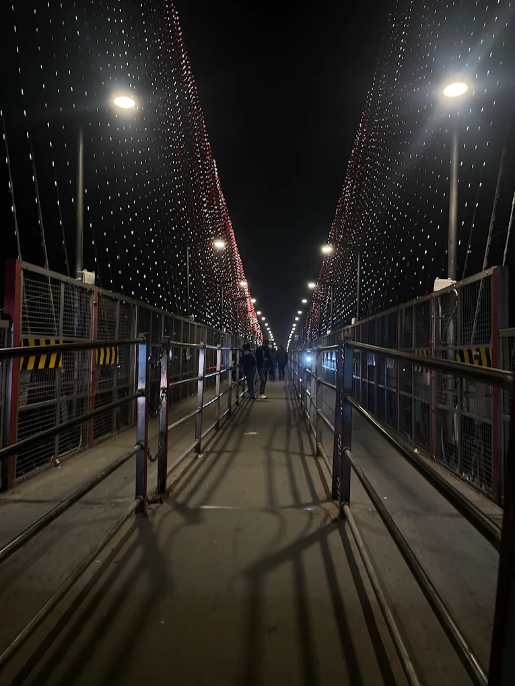
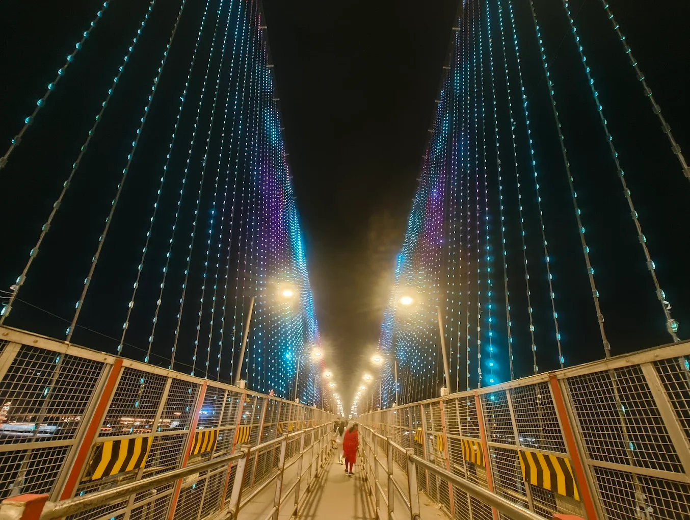
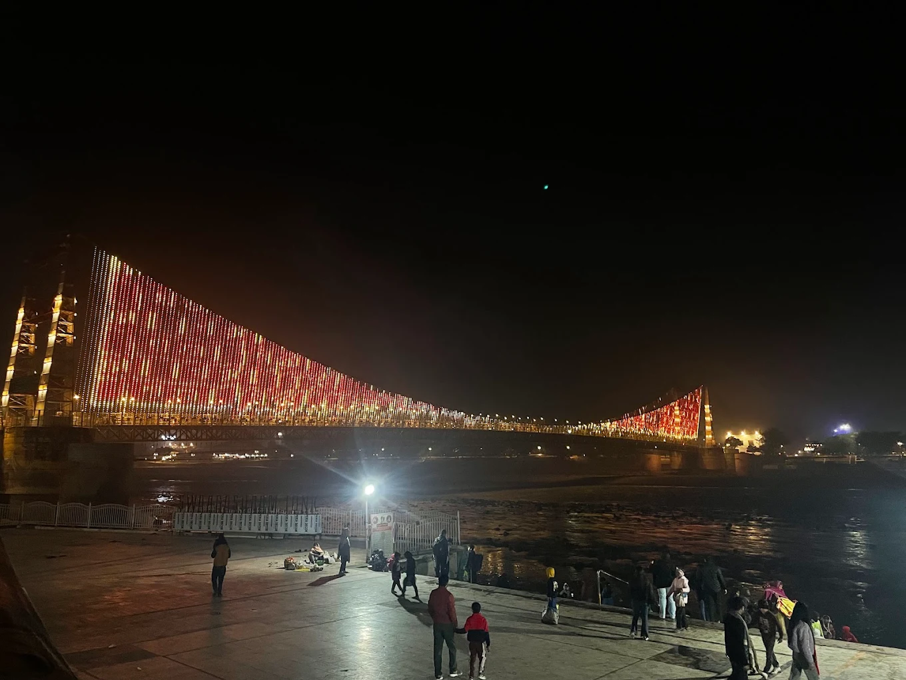
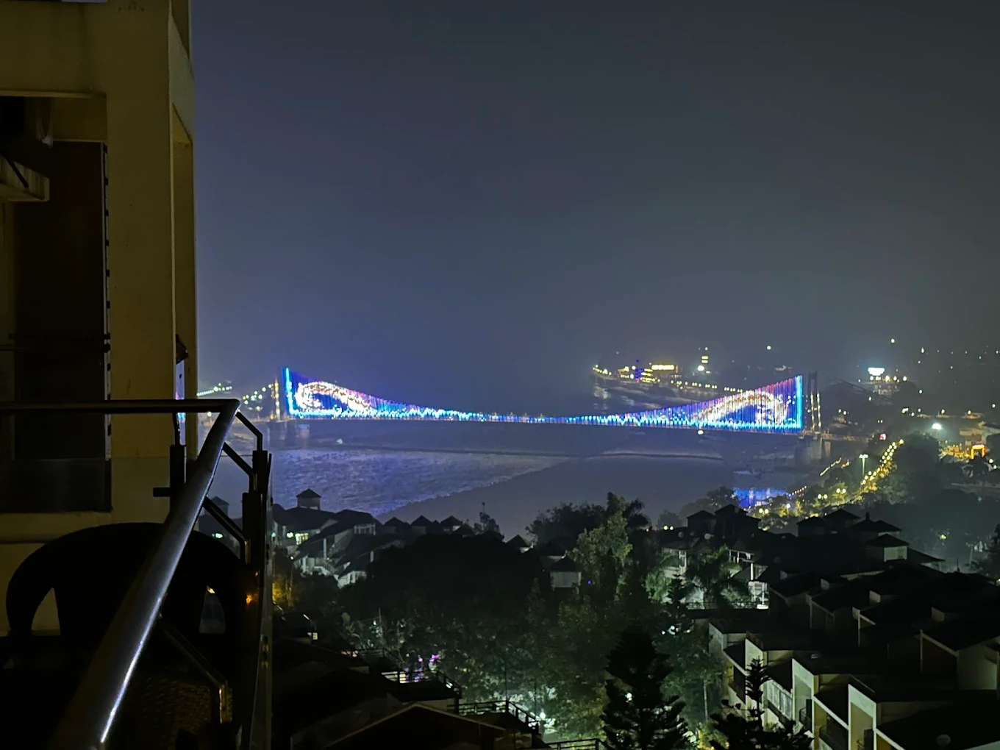

Janki Bridge, commonly known as Lakshman Jhula Bridge (or the old iron suspension bridge), is one of the most photographed and iconic landmarks in Rishikesh. Built in 1939 over the sacred Ganga River, this historic pedestrian bridge connects the two sides of the town — Swarg Ashram and Tapovan — and offers stunning views of the fast-flowing river, surrounding hills, ashrams, and ghats. Named after Lord Lakshman (who is believed to have crossed the Ganga here), it carries deep mythological and spiritual significance.
Walking across Janki Bridge feels like stepping into a postcard — swaying gently under your feet, with the sound of the Ganga below, prayer flags fluttering, and the sight of sadhus, yogis, and travelers from around the world. At sunrise or sunset, the golden light reflects off the river, creating a magical and serene atmosphere. Nearby are famous spots like Lakshman Mandir, Parmarth Niketan, and the new Lakshman Jhula bridge — making this area the spiritual and cultural heartbeat of Rishikesh.
Early morning for peaceful walks and sunrise views, or late afternoon/evening for sunset and Ganga Aarti vibes — avoid peak hours if you dislike crowds.
Historic iron suspension bridge, panoramic Ganga views, mythological connection to Lord Lakshman, nearby temples, ashrams, cafes, and vibrant hippie vibe.
Walk slowly (bridge sways), avoid motorbikes (only pedestrians), carry camera for golden hour shots, visit nearby Lakshman Mandir, and enjoy chai at riverside cafes.
"Janki Bridge is more than a crossing — it is a timeless thread connecting the earthly world to the divine flow of the Ganga, where every step feels like a gentle surrender to Rishikesh’s eternal spirit."